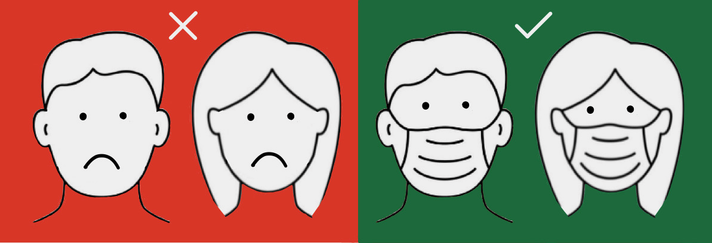
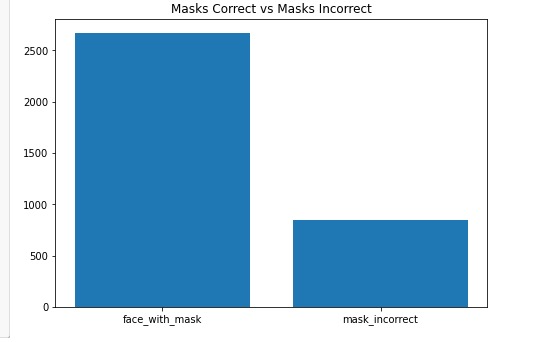
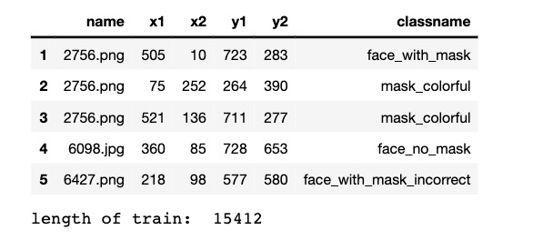

Rithik Gavvala, Mithil Verma, Nandin Padheriya, Vamsi Desu, and Sahiti Baddula Fall 2020 CS 4476 Computer Vision: Class Project Georgia Tech
Abstract
The goal of our project is to create a model that detects faces that are wearing face masks. The system input will simply be various instances of wearing face masks -- some incorrect and some correct. Thus, even if the person has face mask on but it is incorrectly being worn, the system should put up a red flag. The desired input is a picture of an individual’s face. The desired output should be either fully wearing a mask, partially wearing a mask (not covering both mouth and nose), or not wearing a mask. In the case of a mask being worn correctly, a green boundary will show up around the face. In the case of a mask being worn incorrectly or not at all however, a red boundary will show up.
Teaser figure

Introduction
During the COVID pandemic, many health organizations have urged people to wear facial coverings or masks to prevent the spread of coronavirus. This has led to many offices and other establishments that require in-person activity to enforce wearing masks. Our system will enable establishments to determine whether a person is wearing a mask. To solve this problem, we will be using convolutional neural networks, which consists of multiple of convolutional layers, to classify those who are wearing masks and those who are not.
Approach
When we first retrieved the data, there were roughly 6 different columns, where the name represented the name of the image in the training set, x1 through y2 represented the position/coordinates of the person's face who was wearing the mask, and the classname printed symbols that depicted whether the person was wearing a mask, not wearing a mask, wearing a mask incorrectly etc. In order to start on cleaning the data we first decided to change the values in the image name column so that the values were now pointing to the actual file path of the image. Thus, calling and loading image would be much simpler as it would simply take a query to the name column in order to read in an image.
Next we noticed that many of the image names in the data frame were being repeated. The reason for this was because many images had many different people present in them. Thus, each separate image entry had coordinates for a separate person wearing a separate mask, in order to simplify the data frame, we thus, went through the entries and appended the coordinates present in the same image, into one entry, under a column called commonPosition. By doing so, it was a lot easier for us to reference one image at a time since now, each row simply catered to the features of one individual image. Since we had this new accumulation of coordinate points, we were able to drop our x1 through y2 columns.
Lastly, we saw that the dataset had a random array of labels foreach image. Even though there were labels such as "face_with_mask_incorrect", "face_with_mask", and "gas_mask" (which were somewhat related to our topic since they still covered the nose and mouth) there were also labels such as "mask_colorful" and "hat" which did not make any sense to us. Thus, we kept it simple and bundled all labels that were of use to us into one collective label called "face_with_mask" and certain other ones into a category known as "mask_incorrect". Simplifying the labels up tot his point made it a lot easier for us to go ahead and run our Sequencer model in order to properly train our dataset and later on fit it to images we would try to predict.
We then focused on building our model out. We had 2 convolution layers for extracting features in our neural network. This network also has two dense layers and two pooling layers. We had some trouble understanding how to work with each layer, but we experimented with these models to get the final result.
Experiments and results
We primarily used loss as an indicator to understand how well our approach was doing. In our figure, we show the loss decreasing as our epochs increase. In addition, the bar plot shows the number of pictures with masks versos the number of pictures that don’t contain masks. The first baseline is the random model, which randomly picks between the two options. This gives us an accuracy of 50%. Afterwards, we built for sequential model with 2 convolutional layers. When tuning the parameters, we used an Adam optimizer to optimize the learning rate and decay to get the best accuracy for our model. Our accuracy is currently at 94% and we trying to further increase that.


In the image above, we have an example of model trained with more than just two labels. This is an example of how inaccurate our model can be without finetuning any parameters.
Qualitative results
Conclusion
Currently, we are working on building a better model and continuing to experiment with different parameters. We will continue to fine tune the parameters and work with modifying the layers within the sequential model.